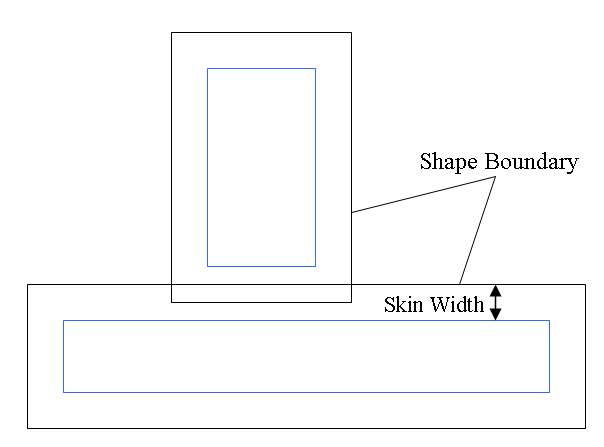
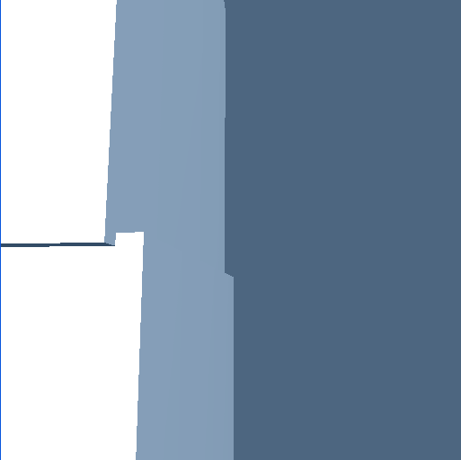
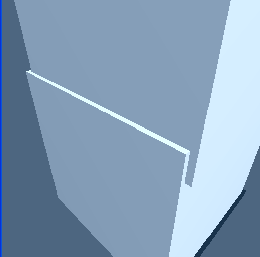

The simulation deals with inaccuracy when stacking objects by letting them
slightly inter penetrate each other. The amount of permitted inter penetration
can be regulated at a scene level using the NX_SKIN_WIDTH parameter. Clearly, a
lot of inter penetration is visually undesirable. On the other hand, forbidding
inter penetration is even worse, because objects may repel each other to the
point where they separate, and then fall back down on each other in a
subsequent time frame. This leads to visible jittering. The amount of inter
penetration that is best permitted depends on many things such as the size of
the objects involved (so that the inter penetrating
region is visually negligible) but also on the stability of the simulation,
which is usually governed by the gravity setting as well as the time step size.
(Lower gravity and smaller time steps typically result in more stable
simulations.)

Skin width specifies how much objects can inter penetrate, as opposed to how
much they are separated.
There are two options for setting the same property; either by using the following method:
void NxShape::setSkinWidth(NxReal skinWidth); void NxShape::getSkinWidth();
or by using the skinWidth
member of NxShapeDesc.
To reduce the visual effect of interpenetrations due to the skin width, it is
possible to inflate the size of physics objects with respect to their graphical
representation. The SDK provides support for this when cooking convex meshes.
See NxCookingParams::skinWidth. For other types of
shapes, the user must manually scale shapes when providing them to the API.
Object with a small skin width:

Object with a larger skin width:
